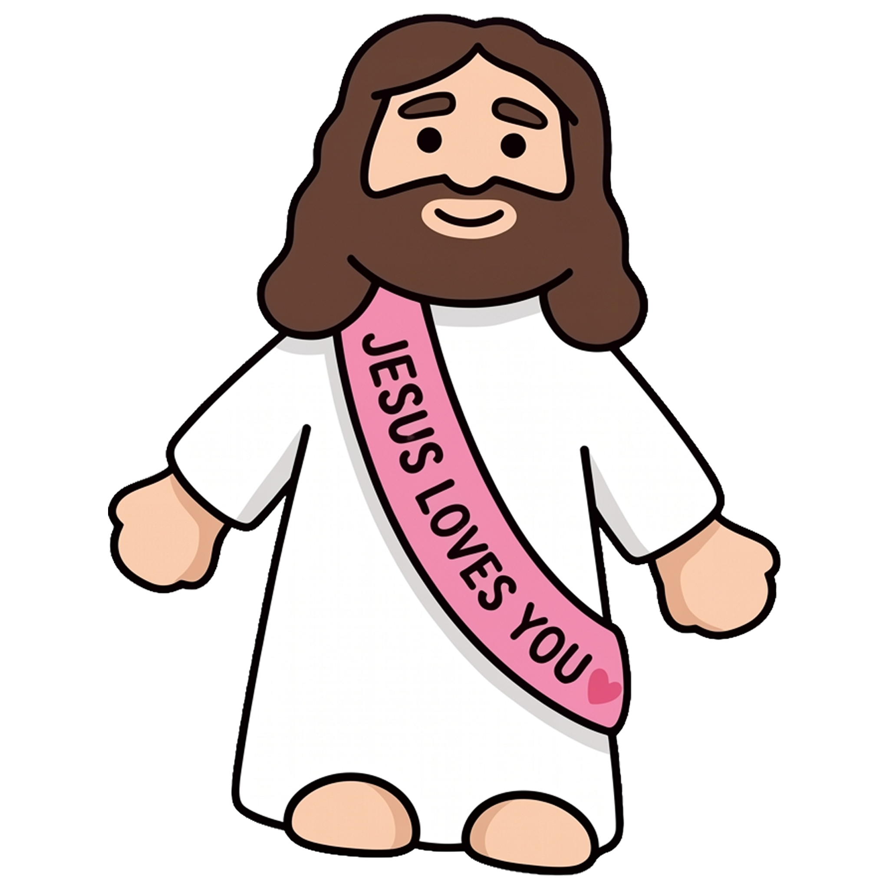
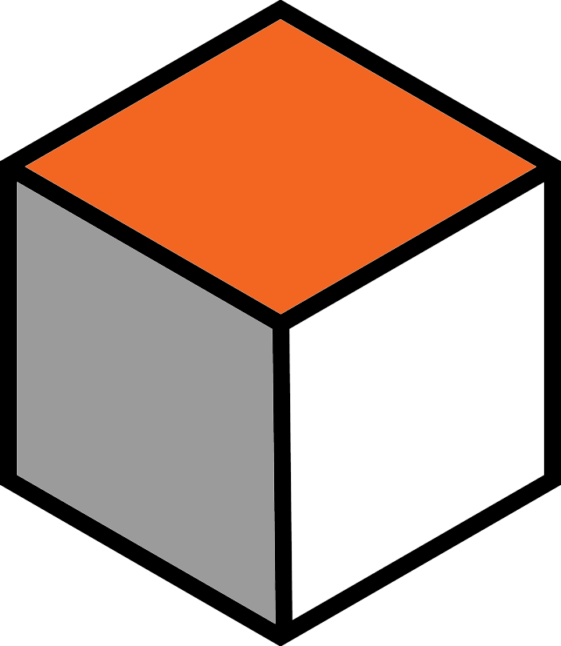
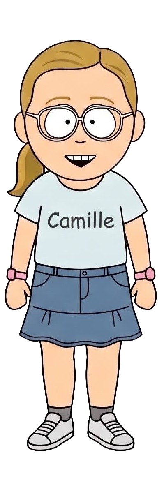
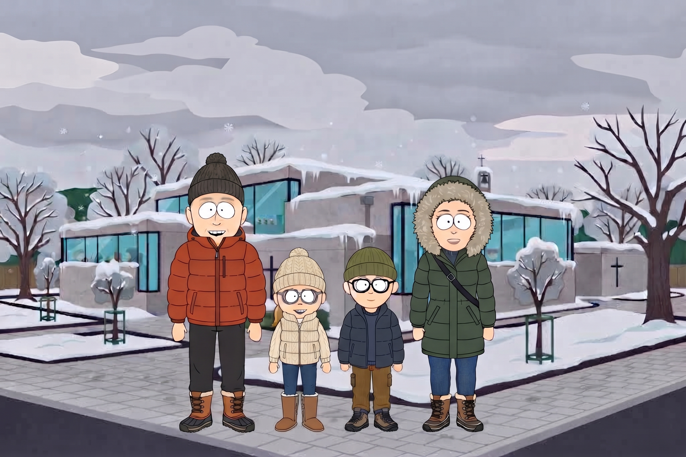

Initiatief in en rond Aalst
Mini Jezusjes
Met onze mini Jezusjes proberen we op een kleine en onverwachte manier iets van warmte, geloof en hoop te delen in en rond Aalst. Lees waarom we dit doen, bekijk de video of laat weten dat je er eentje hebt gevonden.
Ga naar Mini Jezusjes

Minecraft Community
Minecraft Server
Welkom in de Minecraft-wereld van De Blockertjes! Samen bouwen we blokje voor blokje aan een virtuele kerk en dorpsplein waar geloof, creativiteit en vriendschap elkaar ontmoeten.
Naar de Minecraft server

Zomeractie · Goed doel
Nelle made lemonade 🍋
Een hartverwarmend zomerprojectje van onze dochter Nelle: zij verkoopt zelfgemaakte limonade waarvan de volledige opbrengst naar Jube Kids gaat.
Bekijk Nelle made lemonade

Jaarlijkse traditie · Goed doel
Mini kerstmarktje 🎄
Ons jaarlijkse kerstmarktje voor de wijk in onze garage met gratis drankjes en zelfgebakken koekjes van onze vormelingen. De vrije bijdrage gaat integraal naar Mensen voor Mensen Aalst.
Bekijk Mini kerstmarktje

Geloof & Sport · Drie generaties
Onze bedevaarten 🚴♂️
Vic en Ward trekken samen met vake met de fiets op bedevaart naar katholieke bedevaartsoorden zoals Gistel en Scherpenheuvel (ritten van 90 tot 120 km enkel). Ontdek onze video's en het goede doel Levensadem.
Bekijk Onze bedevaarten